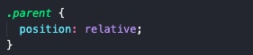
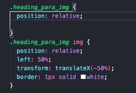
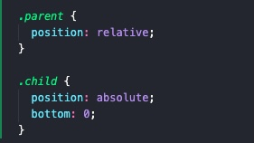
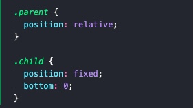

Position is a CSS property that can be used to move an HTML element, using its parent as a point of reference. This property has several values that you can assign it to change an element's position and a few of those values can even remove the element from within the natural flow of your HTML markup. When an element is removed from the flow, other neighbouring elements collapse in to fill the gap that remains. When removed from flow, the element hovers in its own dimension and is therefore removed from the natural relationship it used to have with it's siblings. I mention this as a word of warning as you may not always intend to remove an element from the flow of your HTML markup, in which case I would recommend using alternative CSS properties that maintain the relational behaviour.
I recommend using the position property when you need to move an element relative to the bounding box of its parent element. By itself, this property only enables the selected element to move. You also require this property to be paired with other related CSS properties to define the element's new position. "Top, bottom, left and right" are the related CSS properties that declares where the element should move and you will require at least one of these related properties to achieve any form of movement. To understand how position and the other properties work together, first we must understand the relationship between the child and its parent.
A child (HTML element) will first look to its parent element for a point of reference to position from. If it cannot find a suitable reference point (position property defined), it will look to its grandparent element and further until it finds an ancestor with a defined position property. If none are found, the child element will use the root HTML element as a point of reference which by default has a position value of relative.
Now that we understand the point of reference and the child to parent relationship, we can finally discuss how the "top, bottom, left and right" CSS properties work. These properties are associated with the corresponding borders of the point of reference and require a unit of measure to position an element to the associated border. For instance, if you wanted to position an element 10px away from the top border of its point of reference, you would specify “top: 10px”.
Note that different position values cause different interactions; The most common position values, their uses and any side effects are discussed using code examples below.
The "relative" value is typically used on parent HTML elements to enable it to act as a relative point of reference. This value DOES NOT remove the parent element from the natural HTML flow so it is safe and predictable to use on parent elements.
It can also be used to position an element without removing it from flow. I've demonstrated this use case by positioning the image above in the middle of this section without having to rely on using other CSS properties. See below for the code I used.
The "absolute" value is used to position an element relative to its closest point of reference. Note that this value removes the element from flow. This value is useful for positioning elements like buttons, images and small details that do not fit into the natural flow of your other elements. Note that if there is no point of reference within an element’s line of ancestors, it will use the root HTML element to assess its position. If you intend to position an element to the page (root HTML element), I recommend using the fixed position value instead (see next section).
The "fixed" value is used to position an element relative to the root HTML element (whole page). Note that this value removes the element from flow. This is useful for positioning persistent elements like navigation bars and footers that “follow you” while you scroll.
I would like to emphasis that the setup is usually the same. First give the parent a position value (use relative if you don’t want the parent to move) and then assign the appropriate position value to the element you intend to move. Don't forget to include at least one other associated CSS property (top, bottom, left or right) so you can see the new position on screen. Skip assigning a position value to the parent element if your intended point of reference is the root HTML element (as is the case when using fixed positioning).
Have a look at my home page to see how the position property was used to create my intended design. Try resizing the home screen to see how the sprint navigation bar/timeline changes its position at different screen sizes and also check out the gold dots that appear when you hover over the timeline links (S1 - S5) at 1200px+ screen width. Feel free to dig through the CSS on my repository and as always, have a look at MDN docs and other resources online to learn more about this awesome CSS property!